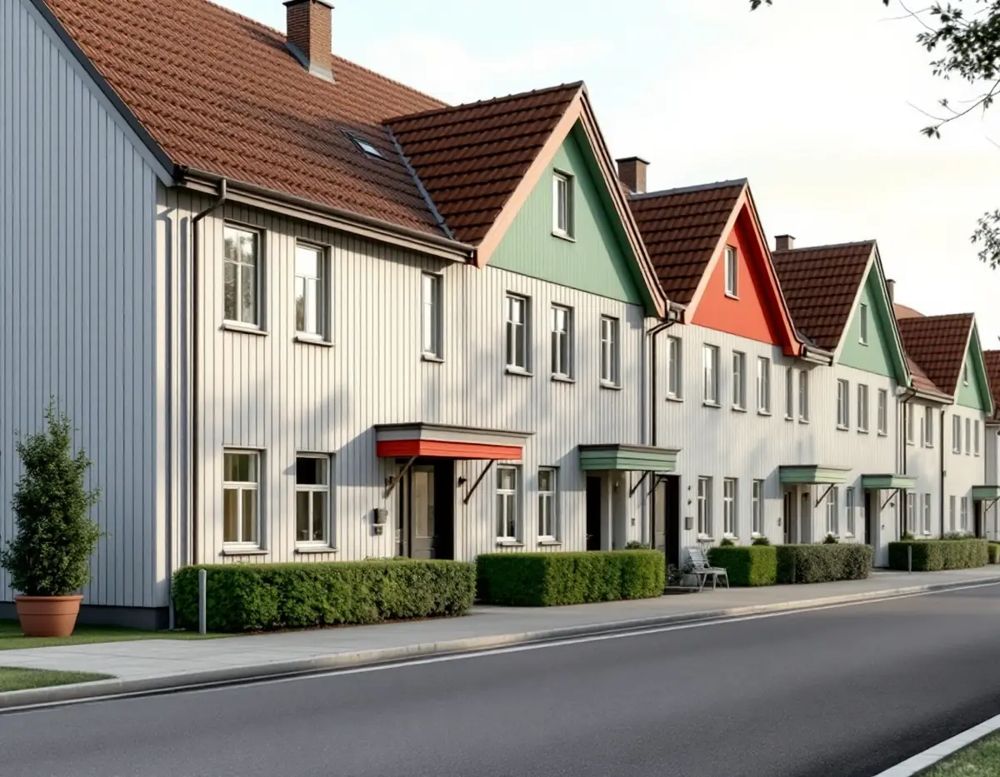
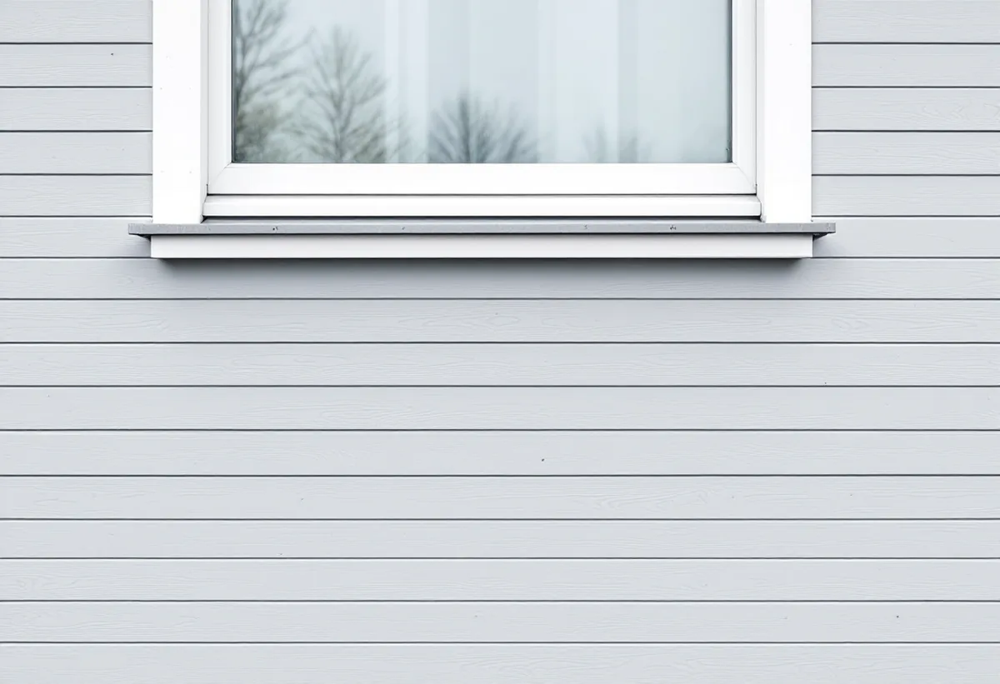

Läs planen
Vi går igenom vad kulturmiljöplanen och detaljplanen säger om just ditt område.
I Stäket, där Järfälla möter Upplands-Bro, finns några av kommunens mest beskrivna fasader: villor från försöket att skapa ett exklusivt villasamhälle 1904 och kedjehus från 1960 med en noga genomtänkt färgsättning. Kommunens kulturmiljöplan säger vad som bör behållas på dem. Geal Entreprenad AB renoverar fasader i Stäket, Jakobsberg, Kallhäll och övriga Järfälla, med gratis platsbesök och skriftligt kostnadsförslag.

Kedjehusen vid Biskop Olovs väg byggdes 1960. Eftersom kommunalt vatten och avlopp saknades rådde byggnadsförbud i Stäket, men ingenjören Joel Liljendahl konstruerade ett separat avloppssystem av vakuumtyp, och då gavs dispens. I området ligger också den så kallade TV-villan, som enligt kulturmiljöplanen byggdes färdig på fyra dagar och auktionerades ut i Lennart Hylands program Stora famnen i maj 1959.
Planen beskriver fasaderna i detalj. Vid gatans södra del har husen spontad träpanel, med bottenvåningarna i ljusgrått och gavlarna i övervåningen i omväxlande brunt, rött och grönt. I den norra delen är bottenvåningarna i stället klädda med rött fasadtegel. Taken är täckta med rött lertegel.
Rekommendationen är att inga förändringar ska göras mot gatan och att den spontade träpanelen ska behållas vid renoveringar i stället för att bytas mot exempelvis grövre lockpanel. Vid ett panelbyte tar vi därför mått på den befintliga profilen och beställer samma, och tillbyggnader hänvisar planen till trädgårdssidan.

Från Almarestäkets gård styckades tomter i ett försök att skapa ett villasamhälle av samma slag som Djursholm och Saltsjöbaden. De första villorna byggdes 1904 på branten ner mot järnvägen, och tomterna var ursprungligen stora, upp mot 2 000 kvadratmeter. Planen beskriver träpanel i olika former som det vanliga fasadmaterialet, men puts förekommer också. Färgsättningen hölls från början i rött eller ljusa oljefärger.
Vid Bonäs och Trappeberg finns tre välbevarade villor: Hallbergska villan från 1907 med liggande rödfärgad panel, en ljusputsad villa vid Trappeberg och en villa på Bonäsvägen 27 med gulmålad träpanel. Ryttarstugan på Dragonvägen 2 är kommunens enda kvarvarande parstuga, timrad och klädd med locklistpanel i falurött.
För Gyllenstiernas väg anger planen att något skydd för de kulturhistoriska värdena saknas i stadsplanen, och den föreslår utökad lovplikt med krav på material och färgsättning vid renoveringar. På sådana hus lagar vi hellre panelen än byter den, och om färgen finns mer under målare i Järfälla.
På ett kedjehus med tegel i bottenvåningen och panel ovanför är skarvarna de svaga punkterna. Boverket beskriver hur anslutningar mot fönster, dörrar och stuprör behöver tätas i mer än en nivå, så kallad tvåstegstätning, så att vatten som kommer förbi det yttre skiktet kan rinna ut igen. Fogar av mjukfog har enligt Boverket visat sig kunna ha en relativt kort livslängd även när de är väl utförda.
Hus från den här tiden kan också dölja asbest. Boverket skriver att många fasader under 1940- och 50-talen kläddes med cementfiberplattor med asbest, att plattorna förbjöds på 1970-talet och att fibrer kan frigöras om man borrar i dem. Uppgifter kan finnas i bygglovshandlingarna, men enligt Boverket är bara prov säkra.
Ska fönstren bytas samtidigt som fasaden görs om finns mer under fönsterbyte i Järfälla. Ett gemensamt kostnadsförslag gör det lättare att planera blecken och anslutningarna runt de nya fönstren.
Järfälla kommun skriver att det inte krävs bygglov för fasadändringar på en- och tvåbostadshus och deras komplementbyggnader, men att det inte gäller om ändringen görs på en byggnad eller i ett område som är särskilt värdefullt. Lov krävs också om detaljplanen har utökad lovplikt. En anmälan krävs om byggnadens bärande konstruktion påverkas väsentligt, vilket kan bli aktuellt om en fönsteröppning flyttas.
Kulturmiljöplanen blev klar 2001, uppdaterades i samband med arbetet med översiktsplanen och digitaliserades 2016. Planens förslag om utökad lovplikt är förslag som blir bindande när de förs in i en detaljplan, men ligger ett hus i ett särskilt värdefullt område gäller lovplikten ändå. Kommunen påpekar att även lovfria fasadändringar ska utföras varsamt, och att det går att söka frivilligt bygglov för att få ett säkert besked. Fler råd om material finns på sidan om fasadrenovering.
Vi går igenom vad kulturmiljöplanen och detaljplanen säger om just ditt område.
Panelens dimension och profil mäts så att nytt virke kan beställas likadant.
Äldre fasadskivor provas innan de tas ner, så att rätt hantering kan planeras.
Panel, fogar, bleck och anslutningar redovisas som egna poster.
Skadat virke byts eller lagas, och anslutningarna mot fönster och tegel görs om.
Vi visar vad som har gjorts och vilka delar som bör ses över framöver.
I ett småhus ger både byte och reparation av fasader, tilläggsisolering och fasadmålning rotavdrag, liksom byggnadsställningar som monteras i samband med arbetet. Är kedjehuset en bostadsrätt ger fasaden inget avdrag, eftersom Skatteverket räknar den som gemensam yta.
Avdraget är 30 procent av arbetskostnaden, högst 50 000 kr per person och år och högst 75 000 kr tillsammans med rutavdrag. Geal drar avdraget direkt på fakturan.
Hur mycket panel som behöver bytas, om profilen måste specialbeställas, hur många fönsteranslutningar som ska göras om och om fasadskivor måste saneras. Branta tomter som de i Stäket kan påverka hur ställningen ställs upp. Du får ett skriftligt kostnadsförslag efter ett gratis platsbesök.
Puts, panel och tilläggsisolering.
Fasadrenovering i Stockholm →Takbyte, takbesiktning och plåtarbeten.
Takläggare i Järfälla →Jakobsberg, Viksjö och Kallhäll.
Takrenovering i Järfälla →Planbesked, extra bostad och ansvar.
Byggföretag i Järfälla →Underhållsmålning i rätt tid.
Fasadmålning i Järfälla →Radhus, kedjehus och souterränghus.
Badrumsrenovering i Järfälla →Bruksvillor, radhus och 70-talsfönster i Järfälla.
Fönsterbyte i Järfälla →Bottenstycken, bleck och vita omfattningar.
Fönsterrenovering i Järfälla →Kedjehus, egnahem och gamla golvskikt.
Golvläggare i Järfälla →Slipa och behandla trappan i huset.
Golvslipning i Järfälla →Kedjehus, radhus och souterräng.
Köksrenovering i Järfälla →Putsade radhus, kedjehus och villor i Järfälla.
Målare i Järfälla →Stuprör, skärmtak och plåttak i Järfälla.
Plåtslagare i Järfälla →Förgårdar, förråd och ytterdörrar.
Snickare i Järfälla →Ny tapet på skivväggar i radhus.
Tapetsering i Järfälla →